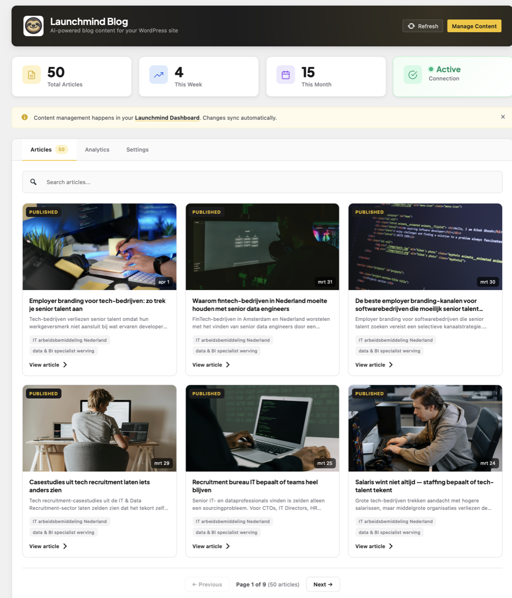
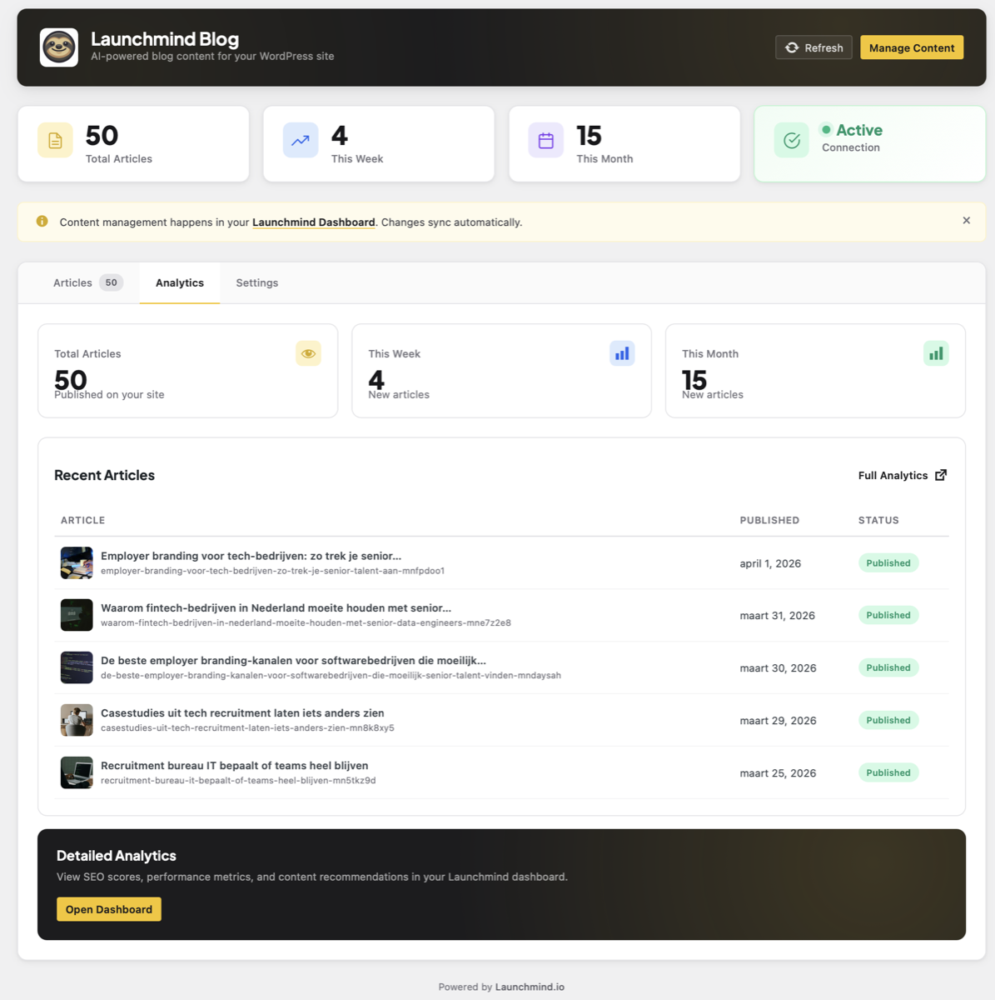
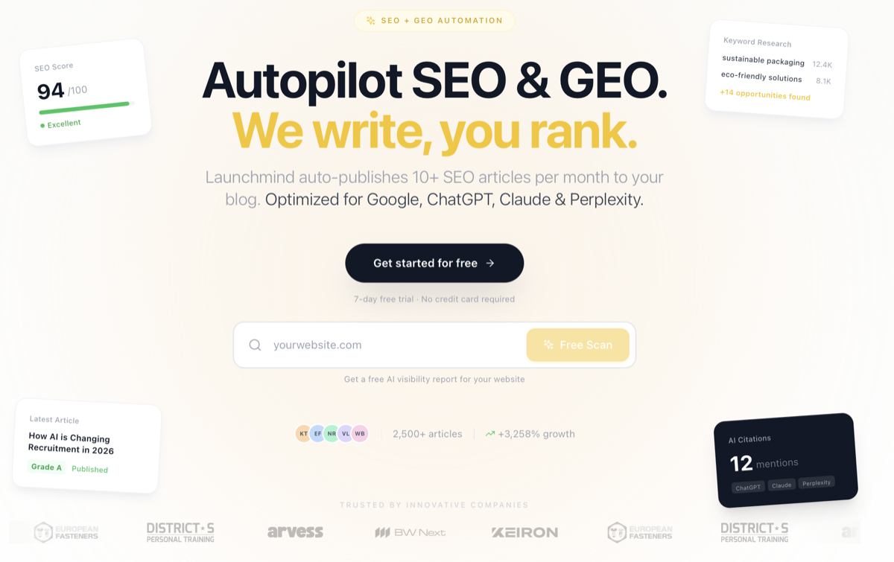

Launchmind generates SEO + GEO optimized articles for your business and pushes them
directly into your Odoo Website > Blog. New posts arrive within one minute of being
published — no copy-paste, no scheduling, no extra dashboards. Articles appear as
native blog.post records that you can still edit, unpublish, or restyle
from the Odoo backend like any other post.

Paste your Launchmind API key in Settings > Website, click Connect, and you're done. Your Odoo registers itself with Launchmind and articles start flowing into your blog automatically.
No cron job, no manual sync. Launchmind pushes each new article to your Odoo via webhook the moment it's ready — usually within one minute of generation.
Articles arrive as standard blog.post records, fully editable in Odoo.
Cover images, tags, author and meta descriptions all preserved — nothing is
locked behind a custom UI.
Every article is optimized not just for Google but also for AI search engines like ChatGPT, Perplexity, and Claude. Schema.org markup, meta descriptions, and structured headings come built-in.
English, Dutch, German, French, Spanish, Italian, Polish and Hindi are all supported out of the box. Choose your language in your Launchmind dashboard — the module respects whatever you set there.
Built on top of Odoo's native website_blog module, so canonical URLs,
sitemap.xml, breadcrumbs and Open Graph tags all keep working exactly as Odoo
designed them.
Install Launchmind Blog from the Odoo Apps store. It depends only
on the standard website_blog module — no extra dependencies.
Go to Settings > Website > Launchmind Blog, paste your API key (find it at launchmind.io > Dashboard > Settings > API), and click Connect.
Launchmind immediately starts pushing your most recent articles to your Odoo blog. From now on, every new article you generate at launchmind.io will appear in your Odoo blog within one minute of publication.
Articles are native Odoo blog posts. Edit them with the Website Builder, change the cover, tweak the SEO — all the standard Odoo blog tools work normally.


website_blog module installed (Odoo includes it by default)Need help? Reach us at support@launchmind.io · Documentation: launchmind.io/docs/odoo